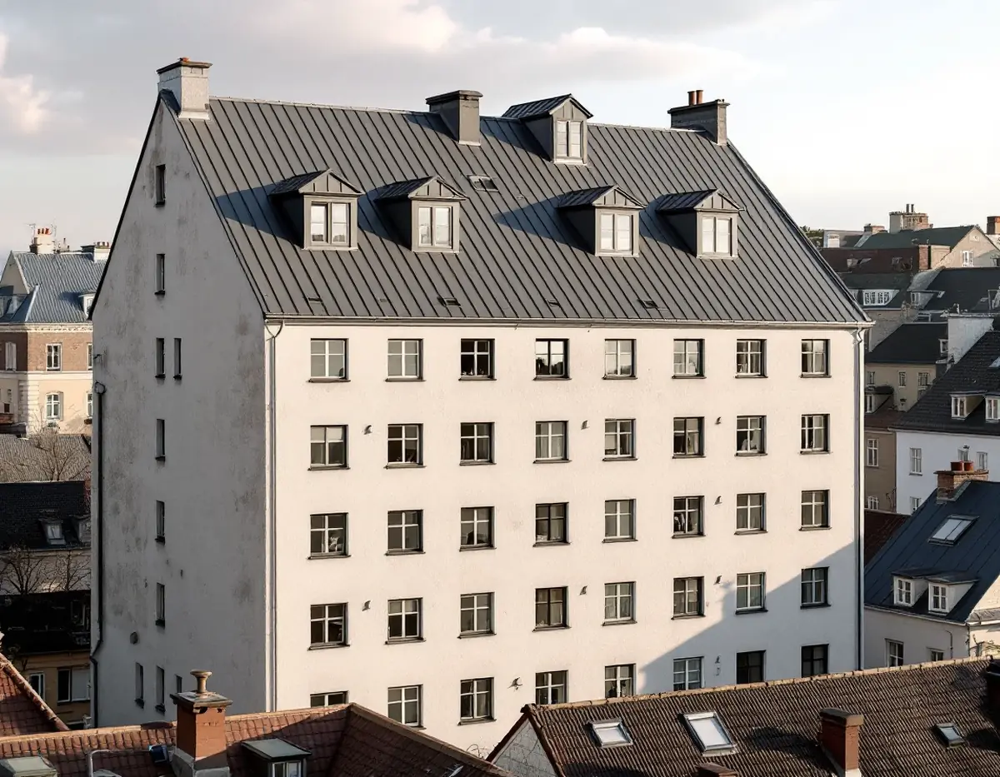
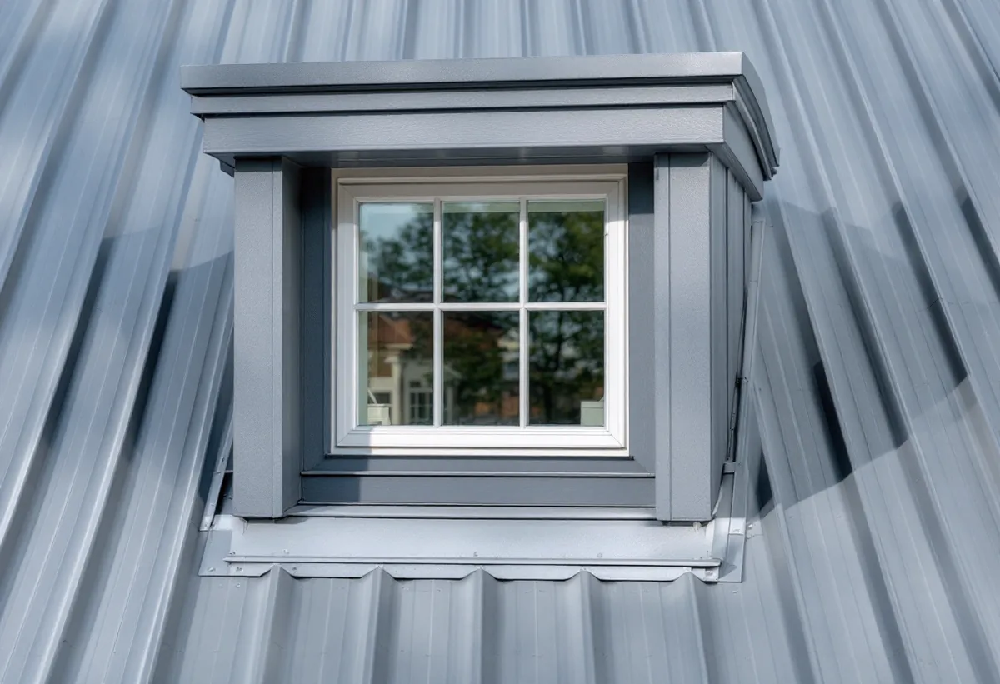
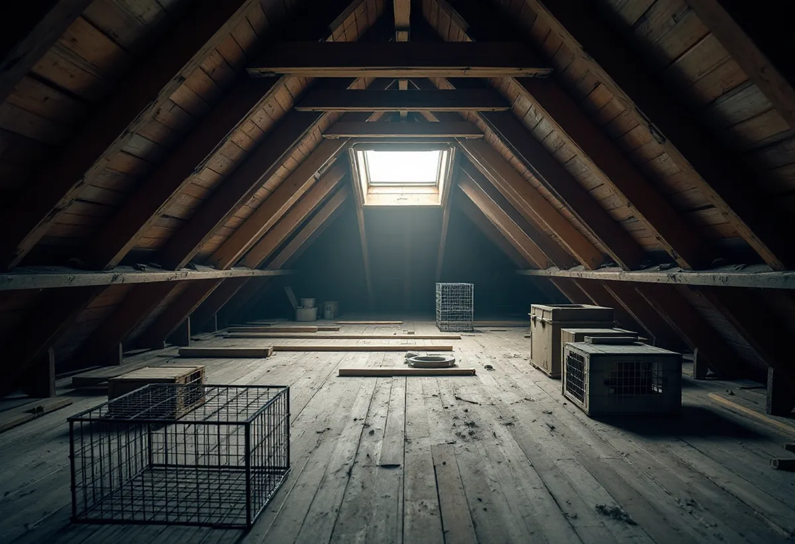

Platsbesök
Gratis besök på taket och på vinden.
På Södermalm möts två sorters tak: stenstadens hyreshus vid de breda gatorna och de äldre, låga husen uppe på bergen. Geal Entreprenad AB har egna plåtslagare som lägger plåt på takkupor, byter takplåt och lagar rännor på båda sorterna, och som hjälper föreningen med underlaget när vinden ska byggas om.

Översiktsplanens riksintressedel beskriver hur stenstadens hyreshus präglar stora delar av malmarna, normalt fem våningar höga vid 18 meter breda gator. Samtidigt finns det enligt samma dokument omkring 300 hus kvar från den tidiga bebyggelsen på malmarna, mestadels på Södermalm. Fjällgatan, Katarinaberget, Vita bergen, Åsöberget och Östra Mariaberget pekas ut som värdekärnor.
Dokumentet påpekar att de flesta äldre byggnaderna har byggts om och till under århundradena, så att det är svårt att tala om ett originalutförande. För en plåtslagare betyder det att varje tak i de miljöerna behöver ses för sig: vilka lager som finns, vilken plåt som ligger och vad som är värt att behålla.
Bland karaktärsdragen för malmarnas tidiga bebyggelse nämner dokumentet den småskaliga bebyggelsen som en markant kontrast till den täta stenstaden runt omkring, och att byggnadsdetaljer som fönster, entréportar och ornamentik tillsammans bildar en karaktäristisk helhet. Plåt på tak, kupor och bleck hör till den helheten, och vi föreslår hellre lagning än byte där det går.

Riksintressedelen nämner vindsinredningar bland de mer begränsade förändringar som kan prövas enligt plan- och bygglagens varsamhetskrav, med stadsbyggnadskontorets vägledningar för vindsinredningar och balkonger som underlag. På stadens sida om flerbostadshus räknas mindre takkupor till de lovpliktiga fasadändringarna, medan en större takkupa räknas som en tillbyggnad.
En takkupa i plåt har många detaljer som ska fungera ihop: kupans tak, sidor och fönsterbleck, anslutningen mot takfallet och avvattningen nedanför. Vi tar fram kupans plåtdetaljer tillsammans med föreningens arkitekt, så att de stämmer med bygglovsritningarna, och lägger plåten när stommen är klar. Inredningen av själva vinden beskriver vi under totalrenovering på Södermalm.
Boverket skriver att kalla vindar ofta drabbas av fuktskador, och att låglutande tak ofta drabbas av läckage. Fukten kan komma både ovanifrån och inifrån huset. På en vind som fortfarande är kall och används som förråd börjar vi därför med att titta på undersidan av taket: på fläckar, rost på spik och fukt i virket.
Hittar vi läckor vid falsar, kupor eller genomföringar lagar vi plåten där. Är skadorna spridda över stora delar av taket föreslår vi i stället att plåten läggs om i etapper, så att föreningen kan planera kostnaden över flera år. Hela underlaget redovisas med foton, så att styrelsen ser samma sak som vi.
Södermalms stadsdelsområde har enligt stadens områdesfakta för 2025 hela 77 525 bostäder, varav 43 680 bostadsrätter och 23 361 övriga hyresrätter. Det är alltså i regel en förening eller en fastighetsägare som beställer ett plåttak, och styrelsen som behöver underlag för beslutet.
Vi beskriver arbetet så att styrelsen kan informera de boende: när det blir ljud från taket, om ställning eller skydd behövs mot gården och hur länge vinden är otillgänglig. Mer om tjänsten finns under plåtslagare.

Gratis besök på taket och på vinden.
Foton av plåt, kupor, falsar och genomföringar.
Lagning, omläggning i etapper eller plåt till nya kupor.
Plåtdetaljer till föreningens bygglovsritningar vid nya kupor.
Plåtarbetet med skydd för gård och trapphus.
Genomgång och dokumentation till styrelsen.
Bor du i bostadsrätt ger plåtarbeten på husets tak, hängrännor och stuprör inget rotavdrag enligt Skatteverket. Avdraget i en bostadsrätt gäller arbete innanför lägenhetens väggar, tak och golv som du själv ansvarar för enligt stadgarna, och taket är föreningens sak.
Bor du i ett av de få småhusen på Södermalm och äger det själv ger plåttak, hängrännor och stuprör rotavdrag enligt Skatteverket, och Geal drar avdraget direkt på fakturan.
Om plåten lagas eller läggs om, takets yta och lutning, antalet kupor och genomföringar, ställning mot gata eller gård, hur material kan tas upp till taket och om plåtdetaljer ska tas fram till ett bygglov. Efter ett gratis platsbesök får du ett skriftligt kostnadsförslag.
Plåttak, hängrännor och beslag.
Plåtslagare i Stockholm →Takbyte, takbesiktning och plåtarbeten.
Takläggare på Södermalm →Stenstad, storgårdskvarter och bergen.
Takrenovering på Södermalm →Vattenskador, ansvar och husens olika åldrar.
Badrumsrenovering på Södermalm →Inreda vinden till bostäder.
Byggföretag på Södermalm →Putsen mot gatan.
Fasadmålning på Södermalm →Kalkputs, kalkfärg och plåt på lister.
Fasadrenovering på Södermalm →Föreningar, gatufasad och gårdsfasad.
Fönsterbyte på Södermalm →Föreningens fönster, besiktigade före beslut.
Fönsterrenovering på Södermalm →Renovera, riva och sortera golvet.
Golvläggare på Södermalm →Slipa golven i den nyköpta lägenheten.
Golvslipning på Södermalm →Kokvrå, gasspis och kulturvärden i lägenheten.
Köksrenovering på Södermalm →Äldre färglager, bättring och provytor.
Målare på Södermalm →Väggar, dörrar och förvaring i lägenhet.
Snickare på Södermalm →Nytt tak på föreningens eller hyresvärdens hus.
Takbyte på Södermalm →Ny tapet och gamla tapetlager.
Tapetsering på Södermalm →Lägenheten i takt med stambytet.
Totalrenovering på Södermalm →